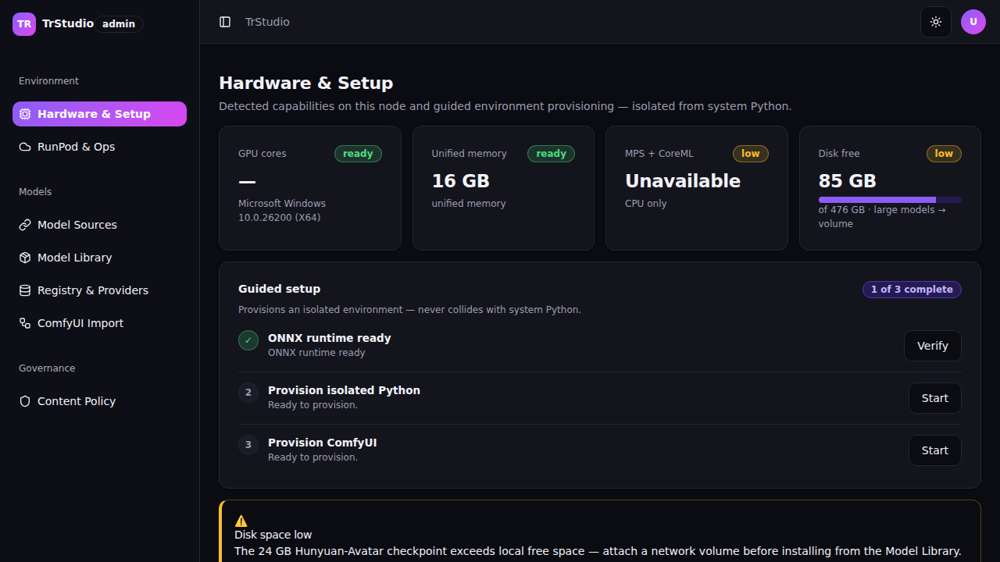
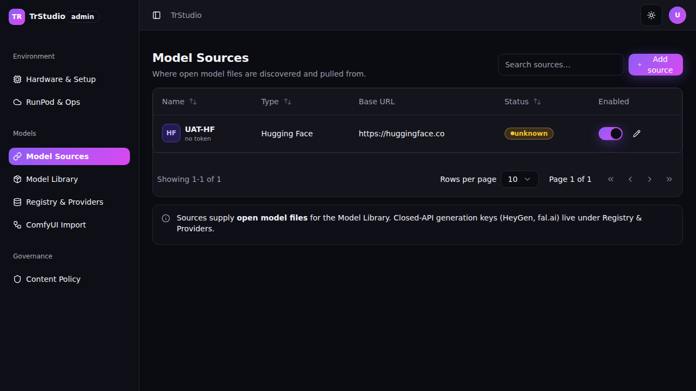
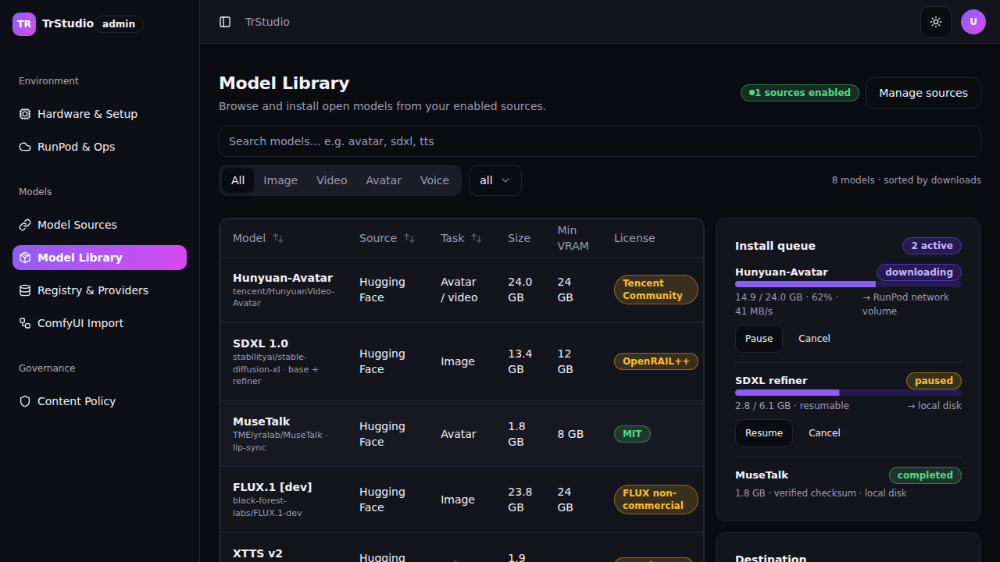
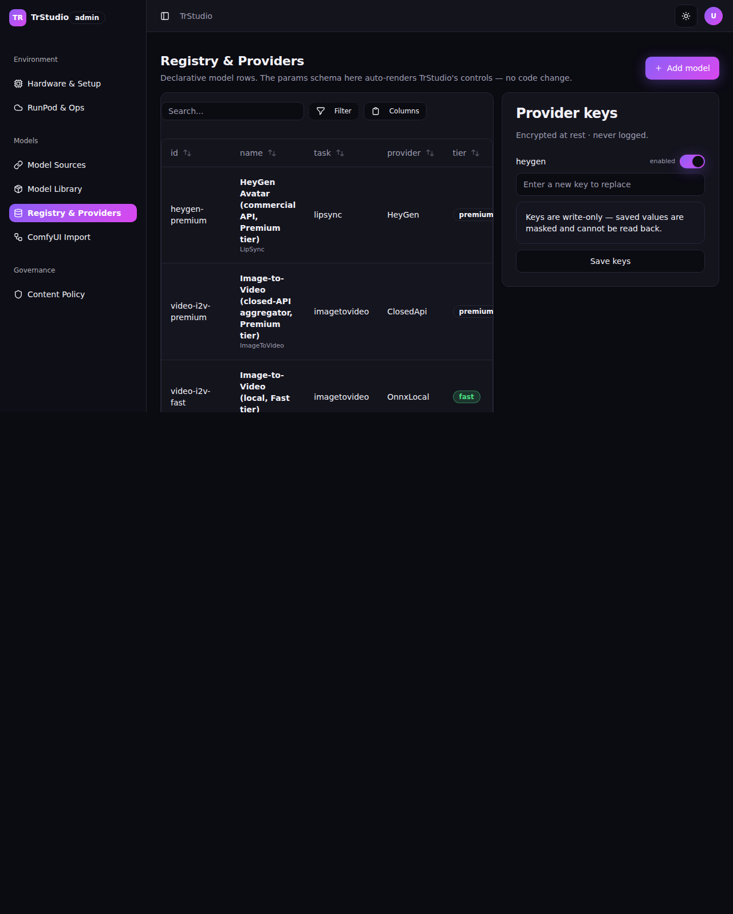
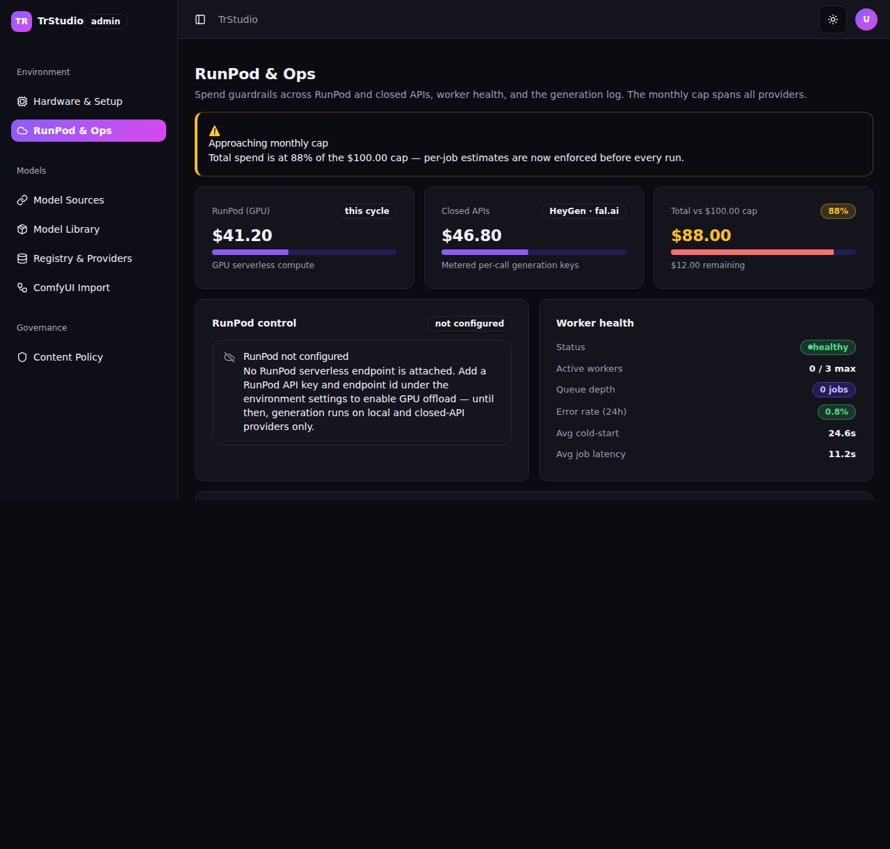
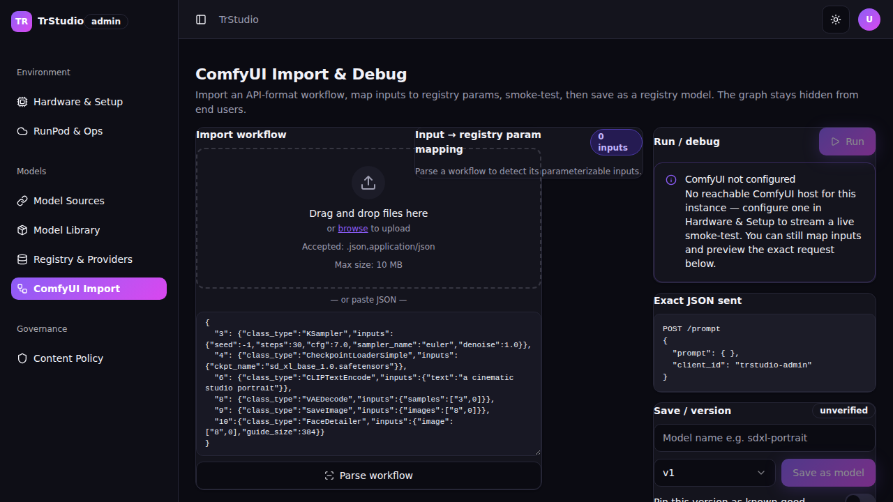
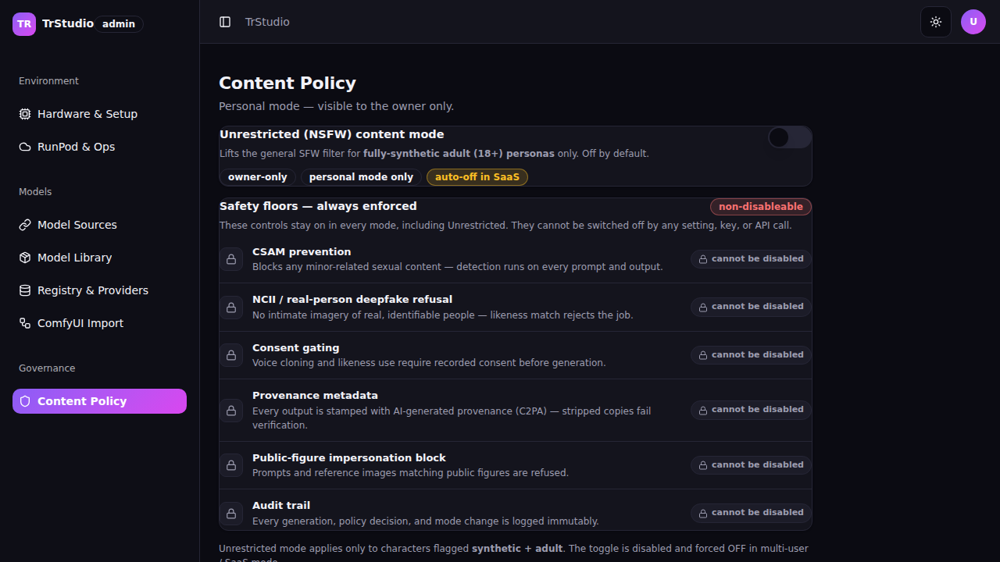

TrStudio Dev Guide — Operator
✅ Runtime-verified 2026-07-05 — exercised as Operator/Owner via
/dev/session(unified role-based app; management surface role-gated). Post-consolidation (BRD-86 / ADR-012 supersedes ADR-001): the two apps are now ONETrStudioapp and the 7 management screens moved from the retiredTrStudioAdminproject intosrc/TrStudioUI/Pages/Admin/— their/admin/*routes and API client calls are unchanged; only the Razor file path and the access model changed (now role-gated within the one app, not a separate binary). Fresh per-role live smoke (.smoke/results.json,.smoke/shots/) confirms: Operator lands on/admin/ops,hasMgmtNavtrue, all 7 screens render their correcth1with none denied, and admin API calls return 200; a Creator reaching/admin/*is bounced toAccessDenied(client) and the API returns 403 (server). Screenshots below are the 2026-07-05 Operator shots (docs/screenshots/TrStudio/operator-*.png).
§1 pointer#
Management-surface screens of the one unified TrStudio app (role-gated to Operator/Owner; formerly the separate TrStudioAdmin app, now retired). Index: TrStudio-DevGuide.md.
Operator — the management surface of one app (role-gated)#
Post-consolidation (BRD-86, ADR-012 supersedes ADR-001) there is one TrStudio app with two navigation surfaces — the creator studios and the management surface — and AppShellNavigation picks the active one from the signed-in user's role (src/TrStudioUI/Navigation/AppShellNavigation.cs:19-60). The 7 management screens live under the role-gated /admin/* routes and their Razor files now sit in src/TrStudioUI/Pages/Admin/ (the TrStudioAdmin project is deleted). Access is Operator or Owner only (CanAccessManagement => Role is UserRole.Owner or UserRole.Operator, AppShellNavigation.cs:53); a Creator is bounced in-app to src/TrStudioUI/Layout/AccessDenied.razor.
The management sidebar is built by TrStudioNavSets.CreateManagementNavigation(...) (src/TrStudioUI/Navigation/TrStudioNavSets.cs:49-72) and selected by role in the shared shell (MainLayout.razor → AppShellNavigation, no separate admin host). Three groups:
| Group | Sidebar item | Route | Razor file | Cite |
|---|---|---|---|---|
| Environment | Hardware & Setup | /admin/setup/hardware (+ active alias /admin/setup) | src/TrStudioUI/Pages/Admin/AdminHardware.razor | TrStudioNavSets.cs:55 |
| Environment | RunPod & Ops | /admin/ops | src/TrStudioUI/Pages/Admin/AdminOps.razor | TrStudioNavSets.cs:56 |
| Models | Model Sources | /admin/sources | src/TrStudioUI/Pages/Admin/AdminSources.razor | TrStudioNavSets.cs:60 |
| Models | Model Library | /admin/models | src/TrStudioUI/Pages/Admin/AdminModels.razor | TrStudioNavSets.cs:61 |
| Models | Registry & Providers | /admin/registry | src/TrStudioUI/Pages/Admin/AdminRegistry.razor | TrStudioNavSets.cs:62 |
| Models | ComfyUI Import | /admin/comfy/import (+ second @page /admin/comfy/debug) | src/TrStudioUI/Pages/Admin/AdminComfy.razor | TrStudioNavSets.cs:63 |
| Governance | Content Policy | /admin/policy | src/TrStudioUI/Pages/Admin/AdminPolicy.razor | TrStudioNavSets.cs:67 |
Owner (the only role with both surfaces) gets an in-app "Switch to Management" / "Switch to Creator studio" control (AppShellNavigation.SwitchSurface, :69-70,112-121; sidebar button AppSidebar.razor:88) instead of a cross-app link.
Landing-truth (re-read from routing code — CORRECTED). In the unified app the Operator does land on /admin/ops — the old "not code-backed" note is now stale. AppShellNavigation.ResolveDefaultSurface selects the Management surface for an Operator (Role == UserRole.Operator ? AppSurface.Management : AppSurface.Creator, AppShellNavigation.cs:98-106), and the management surface's default landing route is /admin/ops (TrStudioNavSets.ManagementLandingPath = "/admin/ops", TrStudioNavSets.cs:14; surfaced via AppShellNavigation.CurrentLandingPath, :62-66). The post-login redirect itself resolves the same way: Login.razor:165 returns aSession.Role == UserRole.Operator ? "/admin/ops" : "/avatar" (dev seam identical, DevSession.razor:117-118). The Phase-1 live smoke confirms it: results.json shows Operator landUrl: http://…/admin/ops. So the corrected statement is: an Operator signing into the unified app lands on the Ops dashboard /admin/ops (Owner lands on /avatar and switches into management in-app; results.json Owner landUrl: /avatar, afterUrl: /admin/ops).
Authorization posture (read from code) — now a two-layer gate. The management screens are gated both client-side (new) and server-side (unchanged):
- Client (in-app bounce, REQ-FN-072):
MainLayoutevaluatesAppShellNavigation.IsRouteAllowed(path)on every navigation (MainLayout.razor:133-136); for an/admin/*route it denies unless the resolved role is management-entitled (AppShellNavigation.cs:131-141,IsManagementPath:146-157) and rendersAccessDenied.razorin place of the page (MainLayout.razor:43-45) so the page component never mounts and its admin API call is never issued. A Creator sees "The management surface is available to Operator and Owner accounts only." (AccessDenied.razor:14-17). - Server (API authority, unchanged): every admin endpoint is guarded by
SpineModule.AdminOnlyPolicy(= "AdminOnly",src/TrStudio.Engine/DependencyInjection/SpineModule.cs:31), which requires aroleclaim of Owner or Operator (SpineModule.cs:67-70); a Creator's call gets 403. Smokeresults.jsonconfirms both layers: CreatordeniedVisible: true+creatorAdminApiStatus: 403; OperatoroperatorAdminApiStatus: 200, all 7 screensdenied: false.
Each page still hydrates its bearer token via IAuthSession in OnAfterRenderAsync and falls back to an empty/representative state when unauthenticated. This gating applies to all 7 screens below (Content Policy's write is additionally owner-intent-gated in the UI). Per-screen authorization notes below list each screen's admin endpoints; those API guards are UNCHANGED by the consolidation.
Screen-by-screen code map#
Operator · Hardware & Setup (Hardware & readiness + Guided setup wizard)#
- Route:
/admin/setup/hardwareand/admin/setup(one component, two@pagedirectives —AdminHardware.razor:1-2) - Razor file:
src/TrStudioUI/Pages/Admin/AdminHardware.razor - Reached via: Environment → Hardware & Setup; Log in as: Operator (or Owner via surface-switch) — a Creator is bounced to
AccessDenied(client) and the API 403s (server) - What this screen does: Shows live host readiness cards (GPU / unified memory / MPS-CoreML / disk) from the authenticated capability report, plus a static guided-setup stepper (ONNX, MuseTalk, isolated Python + ComfyUI, network volume) and a low-disk alert linking to the Model Library.
- Authorization: client
/admin/*gate (Operator/Owner only, elseAccessDenied.razor); server capability data viaApiRoutes.Capabilitiesgroup.RequireAuthorization(SpineModule.AdminOnlyPolicy)(SetupEndpoints.cs:33-35) — policy UNCHANGED by the consolidation - Visual status: ✅ VISUAL-OK (runtime-confirmed 2026-07-05 as Operator, unified role-gated app; desktop)
Screenshot

Screen flowchart
flowchart TD
P["AdminHardware.razor"] --> C1["Capability readiness cards"]
C1 --> E1["GET /api/v1/admin/capabilities"]
E1 --> SV1["ICapabilityDetector.DetectAsync()"]
SV1 --> DB1[("host probe — no DB read")]
P --> C2["Guided-setup stepper"]
C2 --> SEED["SeedSteps() — static, no API call"]
P --> C3["Low-disk Warning Alert"]
C3 --> LINK["href /admin/models"]
Controls on this screen
| Control | Type | Purpose | Populated / calculated by |
|---|---|---|---|
| Capability cards (×4) | Card + Badge + Progress | GPU / unified memory / MPS-CoreML / disk readiness | live HostCapabilityReport → ApplyReport() |
| Capabilities-unavailable note | Card | Shown when no session / endpoint unreachable (no sample hardware) | objCapabilityCards.Count == 0 guard |
| Guided-setup stepper | Steps + Progress + Button | ONNX / MuseTalk / Python+ComfyUI / volume | SeedSteps() static seed |
| "N of M complete" badge | Badge | Step completion count | objCompletedSteps computed getter |
| Low-disk alert | Alert | Links to Model Library | static markup |
Data lineage
| Control / Action | Razor (file:line) | Client/Service method (file) | API endpoint (file) | Engine service → repository (file) | Table / SQL query | Render status | Notes |
|---|---|---|---|---|---|---|---|
| Capability cards | AdminHardware.razor:44-62 | HttpClientFactory("TrStudioApi").GetAsync(ApiRoutes.Capabilities) (:178-189) | GET /api/v1/admin/capabilities → GetCapabilitiesAsync (SetupEndpoints.cs:36,67) | ICapabilityDetector.DetectAsync (Infrastructure/Capability/) | host probe — no DB read | renders (auth-gated; else "unavailable" note) | cards seed empty; hydrate after first render only with a session |
| Guided-setup stepper | AdminHardware.razor:91-113 | none — SeedSteps() (:216-225) | — | — | — | renders (static) | RunStepAsync (:228) is toast-only; real run "wires to /installs" per comment |
| Low-disk alert | AdminHardware.razor:117-126 | — | — | — | — | renders (static) | link → /admin/models |
Business rules / calculations
- Cards hydrate only in
OnAfterRenderAsyncafterAuthSession.EnsureLoadedAsync()— never during prerender — so an anonymous 401 never flashes a sample Mac profile (:151-196). - Disk-used % and low-disk flag:
vLowDisk = FreeDiskGb < TotalDiskGb * 0.25(:201-204). objCompletedStepscounts steps whoseDotClass == "done"(:134).
Known issues / gotchas
- Guided-setup stepper is static scaffolding;
RunStepAsynconly toasts — it does not call the real setup endpoints (ApiRoutes.Setuprun/pollexist atSetupEndpoints.cs:42-44but the page does not invoke them). Not a defect (comment marks it as pending wiring), but the step "Start/Logs/Verify" buttons do not drivePOST /api/v1/admin/setup/steps/{key}/run. - Capability cards require a live host + admin session; on WSL/CI they render the "unavailable" note by design.
Operator · Model Sources#
- Route:
/admin/sources - Razor file:
src/TrStudioUI/Pages/Admin/AdminSources.razor - Reached via: Models → Model Sources; Log in as: Operator (or Owner via surface-switch) — Creator bounced to
AccessDenied(client) + API 403 (server) - What this screen does: Lists configured open-model sources (name, type, base URL, status, enabled Switch), with header search and an add/edit Sheet (name, type, base URL, write-only token, enabled) plus a Test-connection probe. An info Alert separates open-file Sources from closed generation Providers.
- Authorization: client
/admin/*gate (Operator/Owner only); serverApiRoutes.Sourcesgroups.RequireAuthorization(SpineModule.AdminOnlyPolicy)(list atSetupEndpoints.cs:55-57; CRUD + test atPhase3Endpoints.cs:33-40) — policy UNCHANGED - Visual status: ✅ VISUAL-OK (runtime-confirmed 2026-07-05 as Operator, unified role-gated app; desktop)
Screenshot

Screen flowchart
flowchart TD
P["AdminSources.razor"] --> C1["Sources DataTable"]
C1 --> E1["GET /api/v1/admin/sources"]
E1 --> R1["IModelSourceRepository.ListAsync()"]
R1 --> DB1[("ModelSource")]
P --> C2["Add/Edit Sheet · Save"]
C2 --> E2["POST/PUT /api/v1/admin/sources[/id]"]
E2 --> R2["IModelSourceRepository.UpsertAsync + IModelSourceTokenStore.SetTokenAsync"]
R2 --> DB1
P --> C3["Test connection"]
C3 --> E3["POST /api/v1/admin/sources/id/test-connection"]
E3 --> PROBE["HEAD/GET probe → persist Status"]
P --> C4["Enabled Switch"]
C4 --> E2
Controls on this screen
| Control | Type | Purpose | Populated / calculated by |
|---|---|---|---|
| Sources table | DataTable | name/type/base-URL/status/enabled | live List<ModelSource> → MapRow |
| Header search | Input | filter by name or base URL | FilteredSources getter |
| Add/Edit Sheet | Sheet + Fields | upsert a source | SaveSourceAsync |
| API token field | Password Input | write-only token | never read back (HasToken only) |
| Test connection | Button | reachability → ok Badge / fail Alert | TestConnectionAsync |
| Enabled Switch | Switch | flip source on/off | ToggleEnabledAsync (PUT) |
Data lineage
| Control / Action | Razor (file:line) | Client/Service method (file) | API endpoint (file) | Engine service → repository (file) | Table / SQL query | Render status | Notes |
|---|---|---|---|---|---|---|---|
| Sources table | AdminSources.razor:54-93 | GetAsync(ApiRoutes.Sources) (:245) | GET /api/v1/admin/sources → ListSourcesAsync (SetupEndpoints.cs:58,253) | IModelSourceRepository.ListAsync (Infrastructure/ModelSources/ModelSourceRepository.cs) | FROM "ModelSource" | renders | tokens never listed; representative sample only on authed zero-row (:474) |
| Save (add/edit) | AdminSources.razor:287-322 | PostAsJsonAsync/PutAsJsonAsync(ApiRoutes.Sources[/id]) (:302-304) | POST/PUT /api/v1/admin/sources[/{id}] → CreateSourceAsync/UpdateSourceAsync (Phase3Endpoints.cs:37-38,76,112) | UpsertAsync + IModelSourceTokenStore.SetTokenAsync | INTO "ModelSource" | renders (wired) | optimistic local fallback if endpoint unreachable |
| Enabled toggle | AdminSources.razor:325-349 | PutAsJsonAsync(.../{id}) (:341) | PUT /api/v1/admin/sources/{id} (Phase3Endpoints.cs:38) | UpsertAsync | "ModelSource" | renders (wired) | optimistic flip on failure |
| Test connection | AdminSources.razor:352-382 | PostAsync(.../{id}/test-connection) (:366) | POST /api/v1/admin/sources/{id}/test-connection → TestSourceConnectionAsync (Phase3Endpoints.cs:40,170) | HEAD/GET probe, persists Status | "ModelSource" | renders (wired) | "save the source first" guard when unsaved (:356) |
Business rules / calculations
- Status tone/label derived by
ResolveStatus(disabled/connected/unauthorized/unreachable/pending) (:446-461). - API token is write-only:
ApiToken = nullon toggle so a flip never resends a token (:334); a stored token renders only astoken: ••••••••••(:426).
Known issues / gotchas
- All CRUD + test verbs ARE wired server-side (
Phase3Endpoints), so this screen is fully live with an admin session; the razor's "while the write endpoint is wiring" comments are stale but harmless.
Operator · Model Library#
- Route:
/admin/models - Razor file:
src/TrStudioUI/Pages/Admin/AdminModels.razor - Reached via: Models → Model Library; Log in as: Operator (or Owner via surface-switch) — Creator bounced to
AccessDenied(client) + API 403 (server) - What this screen does: Browses installable open models (search + task Tabs + source Select) over a paged table, with one-click Install, a live resumable install queue (Progress + Pause/Resume/Cancel), a destination card and over-disk/registry hand-off Alerts. Browses ENABLED sources only.
- Authorization: client
/admin/*gate (Operator/Owner only); server enabled-source list viaApiRoutes.Sources(admin,SetupEndpoints.cs:55); install queue viaApiRoutes.Installsgroup.RequireAuthorization(SpineModule.AdminOnlyPolicy)(SetupEndpoints.cs:47-49) — policy UNCHANGED - Visual status: ✅ VISUAL-OK (runtime-confirmed 2026-07-05 as Operator, unified role-gated app; desktop)
Screenshot

Screen flowchart
flowchart TD
P["AdminModels.razor"] --> C1["Catalog table (representative)"]
C1 --> SEED["BuildRepresentativeCatalog() — no browse endpoint"]
P --> C2["Enabled-source badge + Select"]
C2 --> E2["GET /api/v1/admin/sources"]
E2 --> R2["IModelSourceRepository.ListAsync()"]
R2 --> DB2[("ModelSource")]
P --> C3["Install button"]
C3 --> E3["POST /api/v1/admin/installs"]
E3 --> SV3["IModelInstallService.StartInstallAsync()"]
SV3 --> DB3[("ModelInstall")]
P --> C4["Install queue · Pause/Resume/Cancel"]
C4 --> E4["GET + POST /api/v1/admin/installs[/id/action]"]
E4 --> SV3
Controls on this screen
| Control | Type | Purpose | Populated / calculated by |
|---|---|---|---|
| Catalog table | DataTable + custom pager | name/source/task/size/VRAM/license/action | BuildRepresentativeCatalog() (no live browse endpoint) |
| Search / task Tabs / source Select | Input/Tabs/Select | filter catalog | FilteredCatalog getter |
| Install button | Button | queue a resumable install | InstallAsync (POST installs) |
| Install queue | Card + Progress | live download progress + controls | live List<ModelInstallItem> → MapQueue |
| Pause/Resume/Cancel | Button | control an install | ControlInstallAsync |
| Destination + over-disk alert | Card + Alert | disk/volume guidance | static markup |
Data lineage
| Control / Action | Razor (file:line) | Client/Service method (file) | API endpoint (file) | Engine service → repository (file) | Table / SQL query | Render status | Notes |
|---|---|---|---|---|---|---|---|
| Catalog rows | AdminModels.razor:84-142 | BuildRepresentativeCatalog() (:290,486) | — (no source-browse endpoint) | — | — | renders-representative (no live catalog source) | comment confirms "browsable catalog is representative" (:276-281) |
| Enabled-source list/badge | AdminModels.razor:26-27,71-74 | GetAsync(ApiRoutes.Sources) (:317) | GET /api/v1/admin/sources (SetupEndpoints.cs:58) | IModelSourceRepository.ListAsync | FROM "ModelSource" | renders | zero enabled → no-sources empty state (:324,33) |
| Install | AdminModels.razor:105,368-415 | PostAsJsonAsync(ApiRoutes.Installs) (:380) | POST /api/v1/admin/installs → StartInstallAsync (SetupEndpoints.cs:51,164) | IModelInstallService.StartInstallAsync (Domain/Install/) → ModelInstallRepository | INTO "ModelInstall" | renders (wired) | optimistic queue entry on failure |
| Install queue | AdminModels.razor:145-194,340-347 | GetAsync(ApiRoutes.Installs) (:340) | GET /api/v1/admin/installs → ListInstallsAsync (SetupEndpoints.cs:50,152) | IModelInstallService.ListAsync → ModelInstallRepository | FROM "ModelInstall" | renders (live-or-representative) | representative queue kept if endpoint unreachable |
| Pause/Resume/Cancel | AdminModels.razor:180-188,418-448 | PostAsync(.../{id}/{action}) (:423) | POST /api/v1/admin/installs/{id}/{action} → ControlInstallAsync (SetupEndpoints.cs:52,200) | Pause/Resume/CancelAsync → ModelInstallRepository | UPDATE "ModelInstall" | renders (wired) | optimistic state change on failure |
Business rules / calculations
Referencefor install parsed from the subtitle's first token (:521); page size 8, client-side pagination (:244,256-258).- Install destination heuristic: models > 10 GB → RunPod network volume (destination card copy,
:196-206).
Known issues / gotchas
- No live source-browse endpoint exists; the catalog table is always a representative sample. Install / queue / controls are live against
ModelInstall. Not a defect (feature gap by design comment).
Operator · Registry & Providers#
- Route:
/admin/registry - Razor file:
src/TrStudioUI/Pages/Admin/AdminRegistry.razor - Reached via: Models → Registry & Providers; Log in as: Operator (or Owner via surface-switch) — Creator bounced to
AccessDenied(client) + API 403 (server) - What this screen does: A filter/sortable registry DataTable (id, name, task, provider, tier, license, safety), an add/edit Sheet with the declarative params-schema editor (key/type/required/default rows with bool-default validation), and a Provider-keys panel of masked, write-only Password inputs with an enabled Switch.
- Authorization: client
/admin/*gate (Operator/Owner only); serverApiRoutes.RegistryandApiRoutes.Providersgroups.RequireAuthorization(SpineModule.AdminOnlyPolicy)(RegistryEndpoints.cs:34-35,47-49) — policy UNCHANGED - Visual status: ✅ VISUAL-OK (runtime-confirmed 2026-07-05 as Operator, unified role-gated app; desktop)
Screenshot

Screen flowchart
flowchart TD
P["AdminRegistry.razor"] --> C1["Registry DataTable"]
C1 --> E1["GET /api/v1/admin/registry"]
E1 --> R1["IRegistryRepository.ListAsync()"]
R1 --> DB1[("RegistryModel")]
P --> C2["Provider-keys panel (masked)"]
C2 --> E2["GET /api/v1/admin/providers/keys"]
E2 --> SV2["IKeyStore.ListMaskedAsync()"]
SV2 --> DB2[("ProviderKey")]
P --> C3["Params-schema editor · Save model"]
C3 --> TOAST["ToastService only — no PUT call"]
P --> C4["Save keys"]
C4 --> TOAST2["ToastService only — no PUT call"]
Controls on this screen
| Control | Type | Purpose | Populated / calculated by |
|---|---|---|---|
| Registry table | DataTable (filter/sort) | model rows w/ tier + safety badges | live List<RegistryModel> → MapRow |
| Add/Edit model Sheet | Sheet | edit display name / task / tier | OpenAddSheet / OpenEditSheet |
| Params-schema editor | key/type/req/default grid | declarative param rows | objParams + AddParamRow/RemoveParamRow |
| Schema validation | inline error | bool params need a default | objSchemaError computed getter |
| Provider keys | masked Password + Switch | write-only key + enabled | live List<ProviderKeyInfo> → ProviderKeyRow |
| Save model / Save keys | Button | persist | SaveModelAsync / SaveKeysAsync — toast only |
Data lineage
| Control / Action | Razor (file:line) | Client/Service method (file) | API endpoint (file) | Engine service → repository (file) | Table / SQL query | Render status | Notes |
|---|---|---|---|---|---|---|---|
| Registry table | AdminRegistry.razor:34-63 | GetAsync(ApiRoutes.Registry) (:256) | GET /api/v1/admin/registry → ListRegistryAsync (RegistryEndpoints.cs:38,68) | IRegistryRepository.ListAsync (Infrastructure/Data/RegistryRepository.cs) | FROM "RegistryModel" | renders | representative sample only on authed zero-row (:300) |
| Provider keys | AdminRegistry.razor:72-93 | GetAsync(ApiRoutes.Providers + "/keys") (:263) | GET /api/v1/admin/providers/keys → ListProviderKeysAsync (RegistryEndpoints.cs:51,129) | IKeyStore.ListMaskedAsync → ProviderKeyRepository | FROM "ProviderKey" (masked) | renders (live-only; never seeded) | keys empty if none stored — by design (:238-242) |
| Save model | AdminRegistry.razor:187,346-356 | none — ToastService.Success only | (unused) PUT /api/v1/admin/registry/{id} exists (RegistryEndpoints.cs:40,80) | IRegistryRepository.UpsertAsync | INTO "RegistryModel" | renders-empty (suspected defect) — shows success toast, never persists | see DEFECTS |
| Save keys | AdminRegistry.razor:92,358-362 | none — ToastService.Success only | (unused) PUT /api/v1/admin/providers/keys exists (RegistryEndpoints.cs:52,135) | IKeyStore.StoreAsync | INTO "ProviderKey" | renders-empty (suspected defect) — shows success toast, never persists | see DEFECTS |
Business rules / calculations
- Params-schema editor is the declarative contract that "auto-renders TrStudio's controls — no code change" (page sub,
:20-23). Type options: file/string/int/float/bool/enum/image/audio/mask (:205). - Schema validation: a
boolparam with a blank default blocks Save (objSchemaError,:208-216; Save disabled at:187). - Tier tone: fast=ok, high=brand, premium=neutral; safety:
RealPersonGated→ "gated"/warn (:282-290). - Provider keys are write-only: placeholder "Enter a new key to replace"; masked values cannot be read back (
:83-90).
Known issues / gotchas
- Save model / Save keys are toast-only despite the backing PUT endpoints existing — confirmed defect (below). Editing a param row or a key and clicking Save gives a false success with no persistence.
Operator · RunPod & Ops#
- Route:
/admin/ops— the Operator's post-login landing (TrStudioNavSets.ManagementLandingPath,TrStudioNavSets.cs:14;Login.razor:165) - Razor file:
src/TrStudioUI/Pages/Admin/AdminOps.razor - Reached via: default Operator landing, or Environment → RunPod & Ops; Log in as: Operator (or Owner via surface-switch) — Creator bounced to
AccessDenied(client) + API 403 (server) - What this screen does: Spend guardrail cards (RunPod GPU, closed APIs, total vs monthly cap) with a near-cap Alert, a RunPod control card (start/stop, auto-idle-stop Switch, cold-start Badge, clean "not configured" state), worker-health/queue-depth cards, and a filterable generation-log DataTable with one-click Reproduce.
- Authorization: client
/admin/*gate (Operator/Owner only); server spendApiRoutes.Spend+ runpodApiRoutes.RunPodgroups.RequireAuthorization(SpineModule.AdminOnlyPolicy)(Phase3Endpoints.cs:43-52); generation log viaApiRoutes.GenerationLog(SpineEndpoints.cs:50) — policies UNCHANGED - Visual status: ✅ VISUAL-OK (runtime-confirmed 2026-07-05 as Operator landing, unified role-gated app; desktop). Historical: the prior 2026-07-04 @390px overflow (823px) was fixed by
.ops-page > * { min-width:0 }+ a ≤430px single-column rule so the generation-log DataTable scrolls inside its own container.
Screenshot (Operator landing shot — this is where an Operator arrives at sign-in)

Screen flowchart
flowchart TD
P["AdminOps.razor"] --> C1["Spend guardrail cards"]
C1 --> E1["GET /api/v1/admin/spend"]
E1 --> SV1["ISpendLedger.GetSummaryAsync()"]
SV1 --> DB1[("SpendRecord")]
P --> C2["RunPod control card"]
C2 --> E2["GET + POST /api/v1/admin/runpod[/start|/stop]"]
E2 --> SV2["IRunPodOps.GetStatus/Start/Stop()"]
P --> C3["Generation log DataTable"]
C3 --> E3["GET /api/v1/generation-log"]
E3 --> R3["IGenerationLogRepository.ListAsync()"]
R3 --> DB3[("GenerationLog")]
P --> C4["Reproduce"]
C4 --> E4["POST /api/v1/generation-log/id/reproduce"]
E4 --> R3
Controls on this screen
| Control | Type | Purpose | Populated / calculated by |
|---|---|---|---|
| Spend cards (×3) | Card + Progress + Badge | RunPod / closed-API / total vs cap | live SpendSummary (or representative) |
| Near-cap alert | Alert | shown at ≥80% (danger ≥95%) | objSpend.CapPct |
| RunPod control | Card + Switch + Buttons | start/stop, auto-idle, cold-start, unconfigured | live RunPodView (or representative) |
| Worker health | Card | status/workers/queue/latency | objWorkerActive/Max/QueueDepth + static |
| Generation log | DataTable | user/model/params/cost/duration/outcome | live PagedResult<GenerationLogEntry> → MapLog |
| Reproduce | Button | re-queue from log | ReproduceAsync |
Data lineage
| Control / Action | Razor (file:line) | Client/Service method (file) | API endpoint (file) | Engine service → repository (file) | Table / SQL query | Render status | Notes |
|---|---|---|---|---|---|---|---|
| Spend cards | AdminOps.razor:57-93 | GetAsync("/api/v1/admin/spend") (:291) | GET /api/v1/admin/spend → GetSpendAsync (Phase3Endpoints.cs:46,229) | ISpendLedger.GetSummaryAsync (Domain/Cost/) → SpendRepository | FROM "SpendRecord" | renders (live-or-representative) | representative kept if cap ≤ 0 / unreachable (:295,409) |
| RunPod control | AdminOps.razor:97-161,385-407 | GetAsync/PostAsync("/api/v1/admin/runpod[/action]") (:308,394) | `GET/POST /api/v1/admin/runpod[/start | /stop] → GetRunPodStatus/Start/Stop (Phase3Endpoints.cs:52-54,238`) | IRunPodOps (Domain/RunPod/) | RunPod API — no DB read | renders (live-or-representative) |
| Worker health | AdminOps.razor:164-192 | enriched from /api/v1/admin/runpod view | (same as above) | IRunPodOps.GetStatusAsync | — | renders (partly static) | error-rate/cold-start/latency rows are static copy |
| Generation log | AdminOps.razor:195-223,329-348 | GetAsync("{GenerationLog}?aPage=1&aPageSize=25") (:331) | GET /api/v1/generation-log → ListGenerationLogAsync (SpineEndpoints.cs:51,197) | IGenerationLogRepository.ListAsync (Infrastructure/Data/GenerationLogRepository.cs) | FROM "GenerationLog" | renders (live-or-representative) | representative sample on zero rows / error (:335-346) |
| Reproduce | AdminOps.razor:215,365-383 | PostAsync("{GenerationLog}/{id}/reproduce") (:370) | POST /api/v1/generation-log/{id}/reproduce → ReproduceFromLogAsync (SpineEndpoints.cs:52) | IGenerationLogRepository | "GenerationLog" | renders (wired) | toast fallback if unreachable |
Business rules / calculations
CapPct = TotalSpend / MonthlyCap * 100(:490); near-cap alert at ≥80%, danger styling ≥95% (:25-28,88-89).- Log params summarized to ≤40 chars, user id shortened to 12 chars (
:448-460). - Monthly cap "spans all providers" (RunPod + closed APIs) — a single deployment-wide cap.
Known issues / gotchas
- RunPod cold-start / start-endpoint needs a configured RunPod API key + endpoint id; without it the card renders the "not configured" state — model/service-gated, NOT a defect.
- Worker-health error-rate/cold-start/latency values are static illustration, not live metrics.
Operator · ComfyUI Import & Debug#
- Route:
/admin/comfy/importand/admin/comfy/debug(two@pagedirectives, one component —AdminComfy.razor:1-2) - Razor file:
src/TrStudioUI/Pages/Admin/AdminComfy.razor - Reached via: Models → ComfyUI Import; Log in as: Operator (or Owner via surface-switch) — Creator bounced to
AccessDenied(client) + API 403 (server) - What this screen does: Import an API-format workflow (drop-zone or paste), parse it client-side into a nodes table, map each literal node input to a declarative registry param, smoke-test with a per-node run/debug panel (status list + WebSocket-preview placeholder + Progress + the exact
/promptJSON), surface a missing custom-node dependency with an Install action, then save the known-good graph as a registry model with a pinned version. - Authorization: client
/admin/*gate (Operator/Owner only); serverApiRoutes.Comfy(/api/v1/admin/comfy) group.RequireAuthorization(SpineModule.AdminOnlyPolicy)(ComfyEndpoints.cs:31-33) — policy UNCHANGED - Visual status: ✅ VISUAL-OK (runtime-confirmed 2026-07-05 as Operator, unified role-gated app; desktop)
Screenshot

Screen flowchart
flowchart TD
P["AdminComfy.razor"] --> C1["Import + Parse (client-side)"]
C1 --> PARSE["JsonDocument.Parse → nodes + mapping"]
P --> C2["Configured probe"]
C2 --> E2["GET /api/v1/admin/comfy/status — 404 (no BE route)"]
P --> C3["Run / debug"]
C3 --> E3["POST /api/v1/admin/comfy/run — 404 (no BE route)"]
E3 --> FALLBACK["representative per-node progression"]
P --> C4["Install missing node"]
C4 --> E4["POST /api/v1/admin/comfy/install — 404 (no BE route)"]
P --> C5["Save as model"]
C5 --> E5["POST /api/v1/admin/comfy/save-as-model"]
E5 --> SV5["IComfyPipelineService.SaveAsModelAsync()"]
SV5 --> DB5[("ComfyWorkflow / ComfyWorkflowVersion / RegistryModel")]
Controls on this screen
| Control | Type | Purpose | Populated / calculated by |
|---|---|---|---|
| FileUpload drop-zone | FileUpload | load workflow_api.json | OnFilesChangedAsync → ParseWorkflow |
| Paste Textarea + Parse | Textarea + Button | parse pasted JSON | ParseWorkflow (client-side) |
| Parsed nodes table | DataTable | id/class_type/status | objNodes from parse |
| Input→param mapping | HTML table | key/type/req/default per literal input | objMapping from parse |
| Run / debug panel | Button + Progress + status list | smoke-test, WS-preview placeholder | RunAsync |
| Exact JSON sent | code block | live /prompt preview | objExactJson computed getter |
| Missing-dependency alert | Alert + Install | resolve custom node | InstallDependencyAsync |
| Save / version | Input + Select + Switch + Button | save known-good, version, pin | SaveAsModelAsync |
Data lineage
| Control / Action | Razor (file:line) | Client/Service method (file) | API endpoint (file) | Engine service → repository (file) | Table / SQL query | Render status | Notes |
|---|---|---|---|---|---|---|---|
| Parse workflow | AdminComfy.razor:49-53,383-449 | client-side JsonDocument.Parse (:399) | — (no round-trip) | — | — | renders | invalid JSON → parse Alert always (:444) |
| Configured probe | AdminComfy.razor:163-176,325-349 | GetAsync(ComfyStatusRoute="/status") (:296,338) | NO MATCH — BE has debug/dependencies/smoke/go-live, not status (ComfyEndpoints.cs:36-57) | — | — | renders-empty (suspected defect) — probe always 404 → objComfyConfigured=false | see DEFECTS |
| Run / debug | AdminComfy.razor:157,475-527 | PostAsJsonAsync(ComfyRunRoute="/run") (:297,486) | NO MATCH — BE run-debug is POST /debug (ComfyEndpoints.cs:42) | (would be) IComfyPipelineService.BuildDebug | — | renders-representative (suspected defect) — POST 404, always falls to local progression | see DEFECTS |
| Install missing node | AdminComfy.razor:215,530-547 | PostAsJsonAsync(ComfyInstallRoute="/install") (:298,536) | NO MATCH — BE dependency scan is POST /dependencies (ComfyEndpoints.cs:40) | (would be) ScanDependencies | — | renders-representative (suspected defect) — POST 404, resolves locally | see DEFECTS |
| Save as model | AdminComfy.razor:249,550-577 | PostAsJsonAsync(ComfySaveRoute="/save-as-model") (:299,560) | POST /api/v1/admin/comfy/save-as-model → SaveAsModelAsync (ComfyEndpoints.cs:44,108) | IComfyPipelineService.SaveAsModelAsync → ComfyWorkflowRepository | INTO "ComfyWorkflow", "ComfyWorkflowVersion", "RegistryModel" | renders (route matches; toast even on failure) | only the save route matches the BE |
Business rules / calculations
- Parse is fully client-side (
ParseWorkflow): array-valued inputs are wired links and skipped; scalar inputs become mapping rows typed string/int/float/bool (InputType,:452-458). - Smoke gate: a node whose
class_typeis not inobjBaseNodestrips the missing-dependency path;objKnownGoodset true only when all nodes pass (:494-524). Save button disabled unlessobjKnownGood && ModelNamepresent (:250-251). objExactJsonrebuilds thePOST /promptbody live from mapping rows, templating each mapped input as{{paramKey}}(:583-607).- Sandbox go-live gate (
POST /go-live) is refused 409 unless the pinned version has a passing smoke (ComfyEndpoints.cs:239-255) — the UI's pin Switch + version Select feed this server rule.
Known issues / gotchas
- Route reconciliation (confirmed defect, below): the page's
ComfyStatusRoute/ComfyRunRoute/ComfyInstallRoute(/status,/run,/install) do not exist on the BE, which exposes/debug,/dependencies,/smoke,/go-live. Only/save-as-modellines up. This matches the PROJECT-STATUS note precisely. - A live ComfyUI smoke-run needs a reachable ComfyUI host (configured in Hardware & Setup) — model/service-gated; the representative per-node progression stands in otherwise (NOT a defect).
Operator · Content Policy#
- Route:
/admin/policy - Razor file:
src/TrStudioUI/Pages/Admin/AdminPolicy.razor - Reached via: Governance → Content Policy; Log in as: Operator/Owner to view the surface — the NSFW switch itself is owner-only, personal-mode only (a second, in-UI gate on top of the
/admin/*Operator/Owner gate); a Creator is bounced toAccessDeniedbefore the page - What this screen does: A single content-policy surface: the SAFE-01..06 floors are always-on, rendered as a locked non-interactive list, and only the general SFW filter is owner-toggleable via the "Unrestricted (NSFW) mode" Switch — behind an explicit confirmation AlertDialog, off by default, for fully-synthetic adult (18+) personas, personal-mode only. In multi-user/SaaS mode the toggle is disabled and forced OFF.
- Authorization: client
/admin/*gate (Operator/Owner only) + in-UI owner+personal-mode gate on the write; serverApiRoutes.AdminPolicy(/api/v1/admin/policy) group.RequireAuthorization(SpineModule.AdminOnlyPolicy);nsfwGET/PUT (SafetyEndpoints.cs:40-44) — policy UNCHANGED - Visual status: ✅ VISUAL-OK (runtime-confirmed 2026-07-05 as Operator, unified role-gated app; desktop)
Screenshot

Screen flowchart
flowchart TD
P["AdminPolicy.razor"] --> C1["NSFW-mode Switch (owner-only)"]
C1 --> GATE["AlertDialog confirmation (enable only)"]
GATE --> E1["PUT /api/v1/admin/policy/nsfw"]
E1 --> SV1["ISafetyPolicyService.SetNsfwEnabledAsync()"]
SV1 --> DB1[("SafetyPolicy")]
P --> C2["Load current policy"]
C2 --> E2["GET /api/v1/admin/policy/nsfw"]
E2 --> SV2["ISafetyPolicyService.GetNsfwPolicyAsync()"]
SV2 --> DB1
P --> C3["SAFE-01..06 floors (locked list)"]
C3 --> STATIC["objFloors — static, non-disableable, no writable representation"]
Controls on this screen
| Control | Type | Purpose | Populated / calculated by |
|---|---|---|---|
| NSFW-mode Switch | Switch (Large) | owner toggle of general SFW filter | objNsfwEnabled, disabled unless objPersonalMode |
| Confirmation AlertDialog | AlertDialog | gate ENABLE only | OnToggleRequestedAsync → ConfirmEnableAsync |
| Multi-user note | Alert | explains forced-OFF in SaaS | shown when !objPersonalMode |
| Safety floors list | locked rows | SAFE-01..06 always-enforced | objFloors static array (6 rows) |
Data lineage
| Control / Action | Razor (file:line) | Client/Service method (file) | API endpoint (file) | Engine service → repository (file) | Table / SQL query | Render status | Notes |
|---|---|---|---|---|---|---|---|
| Load policy | AdminPolicy.razor:165-235 | GetAsync(NsfwPolicyRoute) (:193) | GET /api/v1/admin/policy/nsfw → GetNsfwPolicyAsync (SafetyEndpoints.cs:43,95) | ISafetyPolicyService.GetNsfwPolicyAsync (Domain/Safety/) → SafetyPolicyRepository | FROM "SafetyPolicy" | renders (live-or-safe-seed) | tolerant of personalMode/multiUser field spellings (:212-235) |
| Enable NSFW (confirm) | AdminPolicy.razor:264-308,314-331 | PutAsJsonAsync(NsfwPolicyRoute, {enabled}) (:319) | PUT /api/v1/admin/policy/nsfw → SetNsfwPolicyAsync (SafetyEndpoints.cs:44,99) | ISafetyPolicyService.SetNsfwEnabledAsync → SafetyPolicyRepository | INTO "SafetyPolicy" | renders (wired) | enable in multi-user → 409 (SafetyEndpoints.cs:108-111) |
| Disable NSFW | AdminPolicy.razor:279-284 | PutAsJsonAsync (:319) | same PUT | same | "SafetyPolicy" | renders (wired) | disable applies immediately (no gate) |
| SAFE-01..06 floors | AdminPolicy.razor:82-95,138-152 | none | — | enforced in generation pipeline, not here (SafetyEndpoints.cs:14-16) | — | renders (static, locked) | 6 floors: CSAM, NCII/deepfake, consent, provenance, public-figure, audit |
Business rules / calculations
- Enable-vs-disable asymmetry: enabling ON opens the confirmation gate WITHOUT applying; disabling OFF applies immediately (relaxing a restriction needs consent; re-tightening never does) (
:258-284). objSwitchNonce@keyre-mounts the Switch so its optimistic internal state can never diverge from the C# source of truth (:50,133-136).- Multi-user guard: if
!objPersonalMode,objNsfwEnabledis forced false regardless of any stored flag (ApplyState,:230-234); Switch disabled (:51). - Floors have no client-writable representation and are never in the PUT payload (
:310-313) — the payload is{ enabled }only.
Known issues / gotchas
- SAFE-01..06 are non-disableable by any setting/key/API — enforced in the generation pipeline, not this surface (
SafetyEndpoints.cs:14-16). The UI renders them locked by design. - NSFW enable is owner + personal-mode only; a SaaS/multi-user instance forces OFF (server 409 on enable) — correct behavior, NOT a defect.
DEFECTS FOUND#
- ComfyUI Import & Debug — route-constant mismatch with the backend.
AdminComfy.razor:296-298declaresComfyStatusRoute="/api/v1/admin/comfy/status",ComfyRunRoute=".../run",ComfyInstallRoute=".../install", butComfyEndpoints.cs:36-57mapsimport/map/dependencies/debug/save-as-model/workflows/smoke/go-live— there is no/status,/run, or/installroute. Result: the "ComfyUI configured" probe always 404s (objComfyConfiguredstuck false,:338-339), Run always falls to the representative local progression (:486), and Install-node never reaches the BE (:536). OnlyComfySaveRoute="/save-as-model"(:299) matches. Fix = reconcile the FE consts to/debug,/dependencies, plus a real configured-probe (and/smoke,/go-livefor the gate). Owning REQ: REQ-UI-072. (Confirms the PROJECT-STATUS note.)
- Registry & Providers — Save model / Save keys never persist.
AdminRegistry.razor:346-356(SaveModelAsync) and:358-362(SaveKeysAsync) only callToastService.Successand setobjSheetOpen=false— they make no HTTP call, even thoughPUT /api/v1/admin/registry/{id}(RegistryEndpoints.cs:40,80) andPUT /api/v1/admin/providers/keys(RegistryEndpoints.cs:52,135) exist and are admin-wired. Editing a registry row / params-schema or entering a provider key and clicking Save shows a false "saved" toast with zero persistence. Owning REQ: REQ-UI-071.
Unresolved / TODO hops#
- None. Every service/repository hop resolved to a real symbol and table:
ModelSource,ModelInstall,RegistryModel,ProviderKey,SpendRecord,GenerationLog,SafetyPolicy,ComfyWorkflow/ComfyWorkflowVersion,SetupState.ICapabilityDetectorandIRunPodOpsare host/RunPod-API probes with no DB read (noted inline, not TODOs).